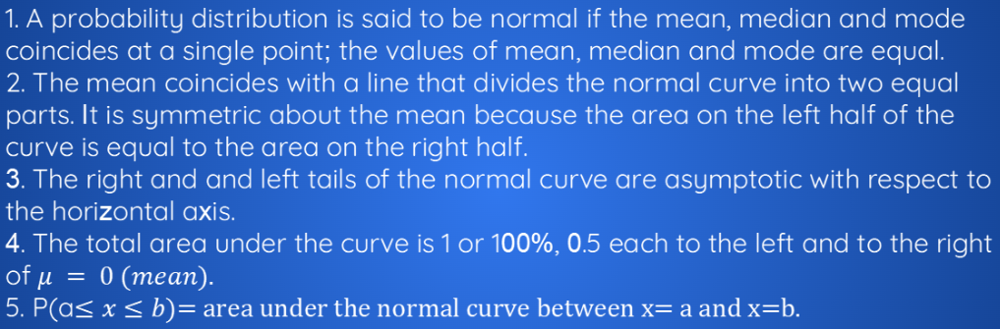
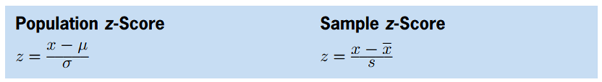
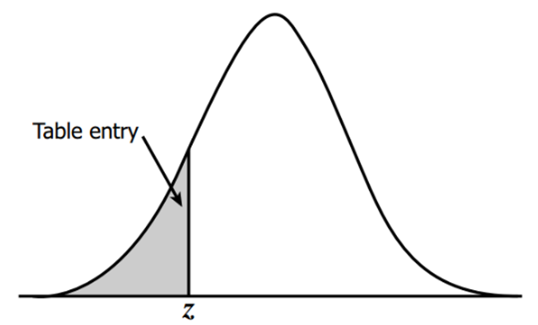
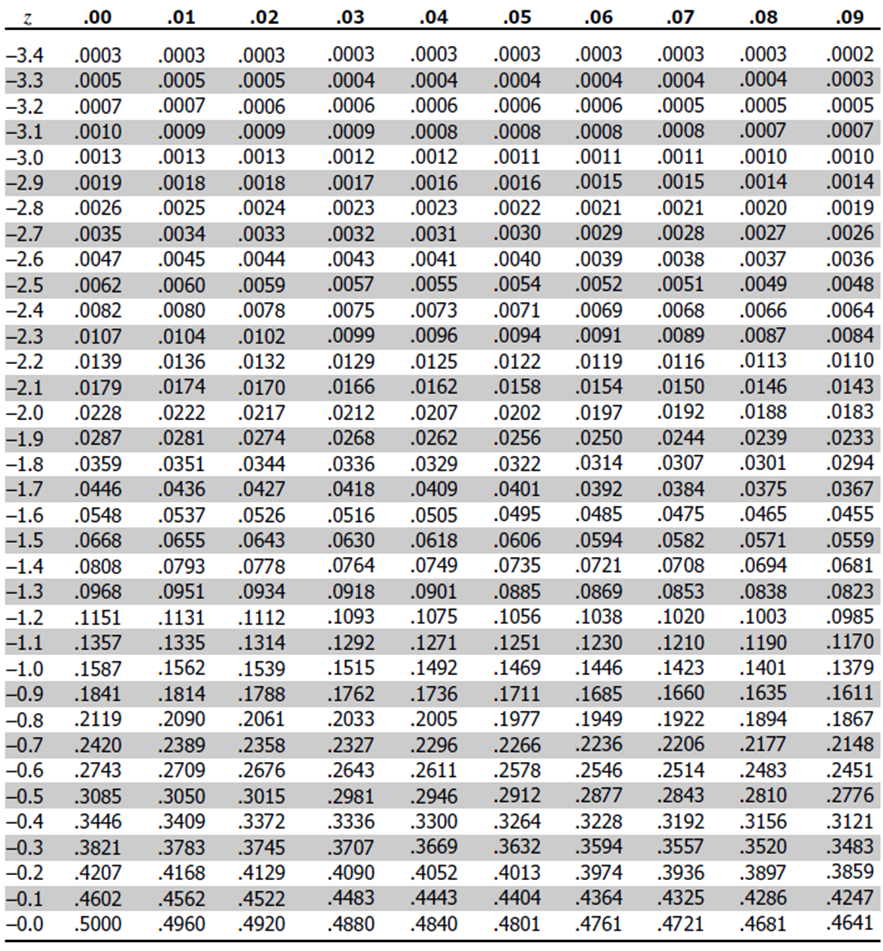
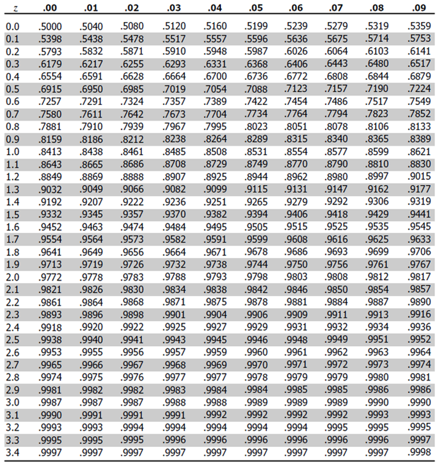
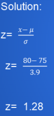

The Normal Distribution and z-scores
Among the many continuous distributions used in the entire theory of Statistics, the normal distribution is by far the most important.
Normal Distribution
• a probability distribution around a central value, dropping off symmetrically to the right and left, forming a bell-like shape

Properties of a Normal Distribution

Z-Score
The number of standard deviations an observation is from the mean.

Important Properties
A positive z-score says the data point is above average.
A negative z-score says the data point is below average.
A z-score close to 0 says the data point is close to average.
A data point can be considered unusual if its z-score is above 3 or below -3.
Find z-Score
Find values on the left of the mean in the negative z-score table.
Table entries for z represent the area under the bell curve to the left of z.
Negative scores in the z-table correspond to the values which are less than the mean.



The empirical rule tells you what percentage of your data falls within a certain number of standard deviations from the mean:
• 68% of the data falls within one standard deviation of the mean.
• 95% of the data falls within two standard deviations of the mean.
• 99.7% of the data falls within three standard deviations of the mean.

The standard deviation controls the spread of the distribution. A smaller standard deviation indicates that the data is tightly clustered around the mean; the normal distribution will be taller. A larger standard deviation indicates that the data is spread out around the mean; the normal distribution will be flatter and wider.
Example
|
The grades on Statistics at Oak have a mean of 75 and a standard deviation of 3.9Ara scored on the exam is 80. Find the z-score for Ara’s exam grade. Round to two decimal places.  |